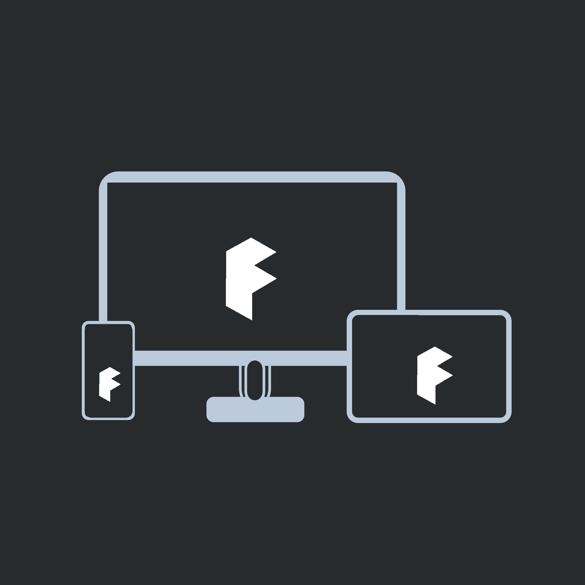

Fluent Design for Web
Don't start from Scratch.
Fluent Design for Web is Open Source, Cross Platform, CSS Framework which is
easy to use and very flexible in nature. It helps dvelopers create environments
which are more accesible and engaging for users.
Go ahead, get started and make great user experiences.

Feels natural on every device
Fluent Design for Web is made to provide rather native experiences in any device it is accessed on. Developers can use different classes to make such experiences and responsiveness of Fluent Design for Web means that it reshapes the UI Elements according to screen size of device it is accesed in.
Build Websites, Webapps, and PWAs
Fluent Design for Web can be easily integrated in any kind of project, wether it is a website for a brand, an app for shopping or anything else. Best part is, Fluent Design for Web is mobile first, customizable, and easy to combine with any other framework on top of it.